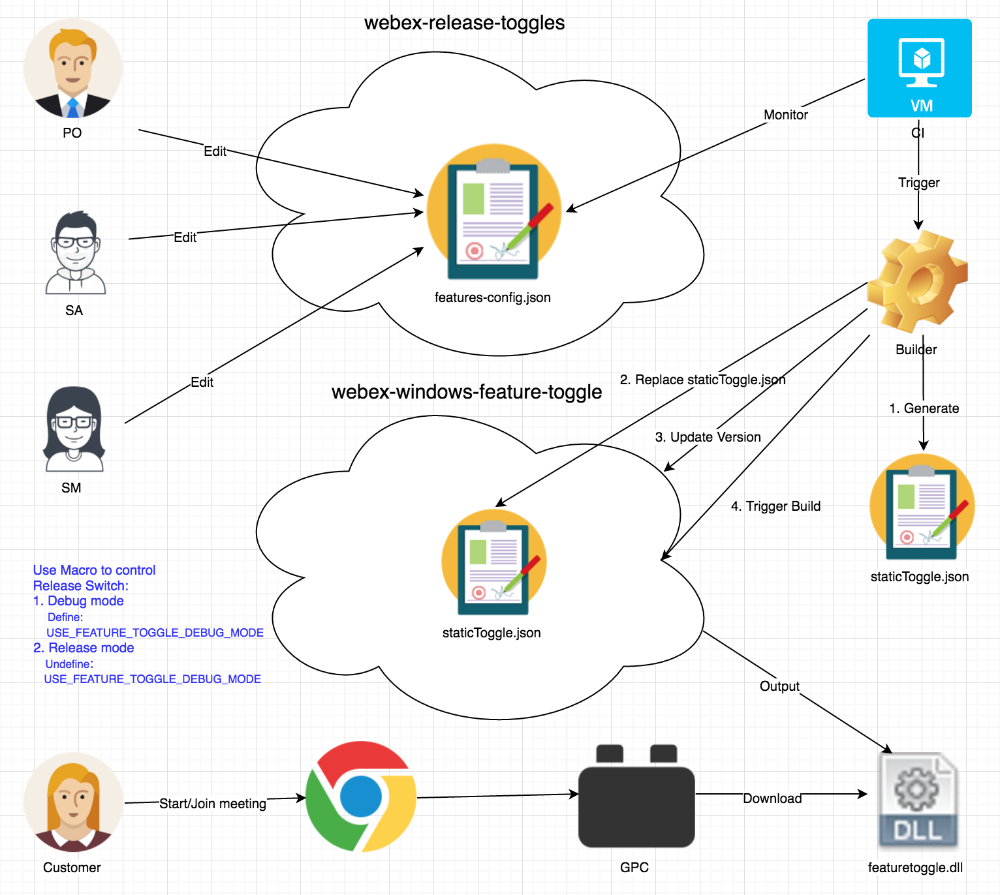

Release Feature Toggle¶
User case diagram¶

PO or SA or SM edit configure file¶
Feature Toggle Git Repo
https://bitbucket-eng-chn-sjc1.cisco.com/bitbucket/projects/CCTG/repos/webex-release-toggles/browse
features-config.json
{ "features": [ { "key": "feature-toggle-sample", "name": "Feature toggle sample", "description": "this is a sample feature toggle config for demo", "owner": "Admin Test", "enable": "false", "target-release": "T32", "sub-flags": { "flag": [ { "name": "j2ee_flag", "enabled": "true" }, { "name": "cb_flag", "enabled": "false" } ] } }, { "key": "feature-toggle-1", "name": "Feature toggle 1", "description": "this is a 1 feature toggle config for demo", "owner": "Admin Test", "enable": "false", "target-release": "T32" } ] }
How to provide staticToggle.json¶
Solutions
- Pack into install package
- MSI
- Firefox plugin
- Chrome plugin
- IE plugin
- Download before start meeting
- Modify download configure file
Pros and Cons
- For Pack into install package solution
- IE plugin can’t support
- Exist client can’t support
- Hard to update staticToggle.json
- For Download before start meeting solution
- Need enhance GPC to support
- Hard to modify staticToggle.json in local
Windows local feature toggle configure file¶
Where to config to support download staticToggle.json
webex-cloudsapp-config
Where to place staticToggle.json
%programdata%/WebEx/WebEx/T31_UMC
Static Toggle Json Format staticToggle.json
{ "features": [ {"enable": false, "key": "feature-toggle-sample"}, {"enable": false, "key": "feature-toggle-1"} ] }
webex-windows-feature-toggle¶
API
bool featureIsEnabled(char* pszFeatureName, bool bDefault); void clearFeatureToggle();
- Where to download lib and header file ?
http://ccatg-build2.cisco.com/cirepo/artifacts/31.6.0/webex-windows-feature-toggle/
Code Example¶
- Example1
#include "featureToggleAgent.h" int CMCServiceMgr::OnConfJoinConfirm(short result, ARMConferenceHandle conf_handle, CAtUser* pUser) { ... if( featureIsEnabled(_T("F1447")) ) { m_pCSIMgr = new CSmCSIMgr(); if(NULL != m_pCSIMgr) { m_pCSIMgr->SetServiceMgr(this); m_pCSIMgr->OnConfJoinConfirm(result, conf_handle, pUser); } } ... }
Effect on UT¶
UT for Example1
class CMCServiceMgrTest : public testing::Test { public: CMCServiceMgrTest() { m_pServiceMgr = NULL; } virtual void SetUP() { if(NULL == m_pServiceMgr) { m_pServiceMgr = new CMCServiceMgr; } } virtual void TearDown() { if(NULL != m_pServiceMgr) { delete m_pServiceMgr; m_pServiceMgr = NULL; } } protected: CMCServiceMgr* m_pServiceMgr; }; TEST_F(CMCServiceMgrTest, Test1) { EXPECT_TRUE(NULL != m_pServiceMgr); short result; ARMConferenceHandle conf_handle; CAtUser atUser; m_pServiceMgr->OnConfJoinConfirm(result, conf_handle, &atUser); EXPECT_TRUE(NULL != m_pServiceMgr->GetCSIMgr()); }
The above UT will run failure for Release Feature Toggle
Solution
- Place staticToggle.json in the UT execute file folder
webex-windows-feature-toggle¶
build
dependencies
doc
- include
- featureToggleAgent.h
output
- src
- featuretoggle.rc
- resource.h
- featuretoggle.vcxproj
- featureToggleAPI.h
- featureToggleAPI.cpp
- featureToggleImpl.h
- featureToggleImpl.cpp
- staticToggle.json
test
How other project use feature toggle¶
- Add webex-windows-feature-toggle to your dependencies.xml file
- Add featureToggleAgent.h header file to your project
- Call featureIsEnabled where you want to use feature toggle
Wiki¶
- Feature over view design
https://wiki.cisco.com/display/HFWEB/Release+Feature+Toggle#ReleaseFeatureToggle-4.1theflowdiagram
- Download feature toggle zip package
https://ccatg-build2.cisco.com/cirepo/artifacts/32.0.0/webex-windows-feature-toggle
https://wiki.cisco.com/display/WEBEXCI/Build+Client+Component+Locally
Reference¶
Some thinking for win client¶
- Effect on Chrome Plugin
- Effect on Firefox Plugin
- Effect on MSI
- Effect on UT
- Effect on TA
- Effect on class member
- Effect on header file
- Effect on the exist and new project
- When remove feature toggle, maybe will cause other feature can’t work
- Effect on coding habit
- Where to place the header file or lib
- There too many places need staticToggle.json file
- Does staticToggle.json need support upgrad